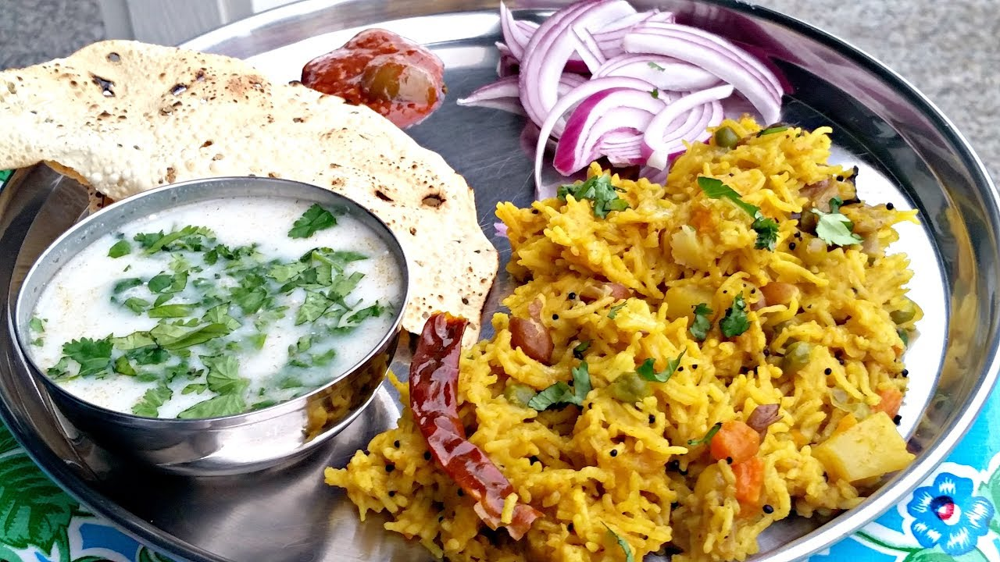

Khichdi

What is it?
Khichdi is a comforting Indian dish, typically made from a blend of rice and lentils. It's known for its soft,
porridge-like consistency and mild flavors, often enhanced with turmeric and a tempering of cumin and ghee.
Khichdi is easily digestible, making it a popular choice for the sick or those seeking a light meal.
Ingredients
The necessary Ingredients required to prepare it are :
- 1 cup Basmati Rice
- 1/2 cupMoong Dal (yellow split lentils)
- 1 teaspoonTurmeric Powder
- 1 teaspoonCumin Seeds
- 2 tablespoonsGhee (clarified butter)
- Salt, to taste
- 4 cupsWater
- Optional: Vegetables like peas, carrots, and cauliflower
Steps to prepare:
- Wash the rice and dal under running water until the water runs clear. Soak them in water for about 30
minutes.
- In a pressure cooker, heat the ghee. Add the cumin seeds and let them sizzle.
- Add the turmeric powder and stir.
- Drain the rice and dal, add them to the cooker, and stir for a few minutes until well mixed with the spices.
- Add the salt and water. If using vegetables, add them now.
- Close the pressure cooker and cook for about 4-5 whistles or until the khichdi has a soft, mushy
consistency.
- Let the pressure release naturally, then open the cooker and give the khichdi a good stir.
- Serve hot with a dollop of ghee on top.
Enjoy your meal!😊